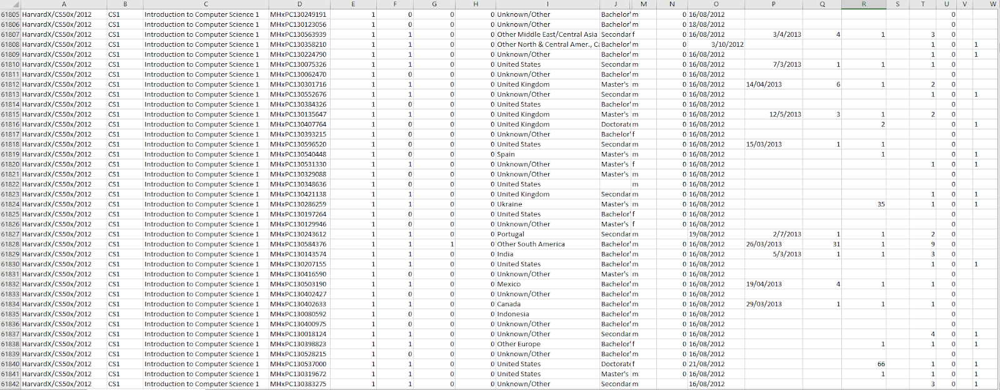

Data Exploration of Online Learning
Introduction
edX is a nonprofit provider of Massive Open Online Courses (MOOCs). Founded by Harvard and MIT, edX offers courses at the university level from over 150 top American institutions. With the importance of social distancing and prevalence of self learning, these online courses provide accessible education to students around the world who wish to learn and improve their skills or explore new academic fields of interest.
For this dataset exploration assignment, we chose to analyze the EdX_2013 Academic Year Courses dataset from Tableau Public. The dataset contains the course and demographic information from 641,138 registered users for 13 online edX courses offered by Harvard and MIT. For each user, the dataset includes the gender, country of residence, course title, grade achieved, whether the course was completed, whether the student received a course certification, and other details about the student’s course activity. The large number of data dimensions in this dataset provided the ability to investigate the popularity of certain subjects across demographic groups and the patterns of student activity across subjects. We structured our data exploration around the following topics and questions:
Topic 1: Course Popularity
- How do courses rank in popularity?
- Which courses are popular in different countries?
- Which courses are popular within different genders?
- How does the popularity of STEM courses compare to that of humanities courses?
- Which university's courses are more popular?
Topic 2: Student Performance
- What percentage of registered students completes the course or gains certificate?
- What is the relationship between the student’s grade in the course and whether or not they received the course certification?
- What is the average grade achieved by students in different countries?
- How does each gender perform in different courses?
- What is the average grade achieved in each course?
Analysis
Topic 1: Course Popularity
How do courses rank in popularity? How does the popularity of STEM courses compare to that of humanities courses?

Which university's courses are more popular?

Another point of interest was the popularity of courses from the two universities in this dataset. Harvard and MIT are both well-known and prestigious universities in America, so we were curious to see if students had any preferences for the university sponsoring the course. We can see from the visualization below that MIT offered more courses than Harvard, however Harvard had a larger number of registered students in total. This could in part be due to the subjects offered by each university, however we can also take the introductory Computer Science courses offered by each school as a comparison. While both offered this introductory course, Harvard's CS course still had over 40,000 more students than MIT's CS course, as shown in the graph above. Additionally, Harvard's humanities courses were more popular than MIT's humanities courses, which might be due to Harvard's reputation as having strong humanities departments, while MIT is primarily known for its STEM programs.

Which courses are popular in different countries?
Another interesting question we explored was how the popularity of courses varied across countries. As we expected, we see that both the CS courses remain highly popular for the majority of the countries, with the MIT course appearing to be more popular around Europe, Asia, and South America, and the Harvard course being more popular in North America, Australia, and France. Only one country had The Ancient Greek Hero as their most popular course, which was Greece. It makes sense that in Greece would place high cultural importance on their own ancient history and legacy. The Circuits and Electronics course was the most popular course in two countries, India and Pakistan, which also aligns with the popularity of engineering fields in those countries.
Which courses are least popular in different countries?
We also took a look at which courses were the least popular in each country. The least popular courses were slightly more varied. Elements of Structure was the overall least popular course in Asia, North America, and Australia, and Mechanics was the least popular course in South America, Japan, and parts of Europe and Africa. The Challenges of Global Poverty was also the least popular course in some European countries as well as Egypt. In Bangladesh, the least popular course was the The Ancient Greek Hero. Since ancient Greek culture has historically been more influential in the western world such as in Europe and America, it's not surprising than Asian country such as Bangladesh wouldn't be as interested in this course.
Which courses are popular within different genders

Topic 2: Student Performance
What percentage of registered students completes the course or gains certificate?

What is the average grade achieved in each course? What is the relationship between the student’s grade in the course and whether or not they received the course certification?

How does each gender perform in different courses? What is the average grade achieved by students in different countries?


Reflection
Data Selection
In the age of technology and social distancing, taking online courses has become an attractive alternative to traditional forms of education. Given that much of university education is now online due to the pandemic, the differences between traditional university and online education are decreasing rapidly. edX is an MOOC (massive open online course) platform created by Harvard and MIT to host free online courses at the university level to a worldwide audience. It is the most well-known online education provider, and typically a first choice for online learners. We were curious to see what insights we can find in the edX dataset about the behavior of online learners and how education could look in the future.
Data Processing
Although the data was generally very clean and organized, we did have to alter it a bit in order to improve the clarity of our results. Firstly, the shortened versions of the course names were unclear in some cases, and one course, "Introduction to Computer Science I", wasn't given a shortened name at all. To fix this, we defined aliases for all the courses and gave them new names which we thought would better convey to the viewer the content of the course. We also wanted to compare courses in the humanities and in STEM, so we grouped the data into manually defined categories using Tableau's grouping feature. Additionally, we also added some calculated fields to find specific metrics such as the most popular course for each country.